Editorial
Guest Editorial: Special Issue on AIxHEART, AIxB, and AIxSE 2025
International Journal of Semantic Computing, 2026
Publications
This page lists new and selected representative publications. For the full and most up-to-date publication list, please see Google Scholar, DBLP, and ORCID.
Recent Work
International Journal of Semantic Computing, 2026
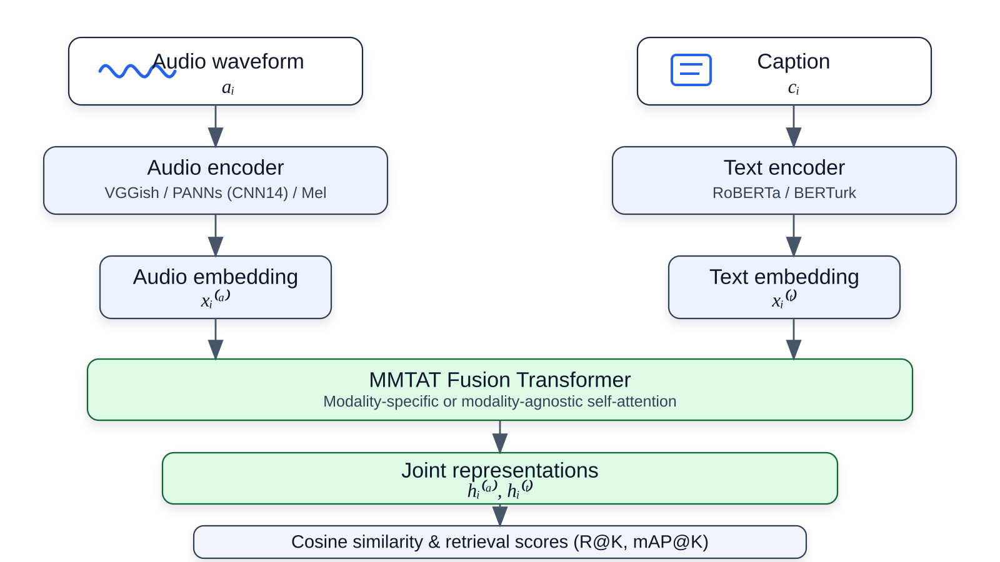
IEEE AIxDKE, 2026, pp. 50-53
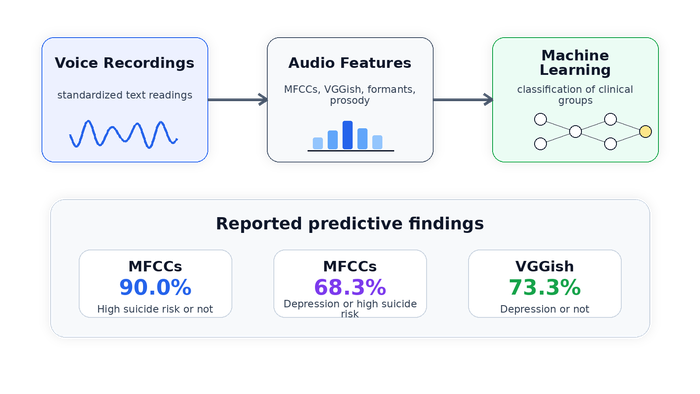
Brazilian Journal of Psychiatry, October 13, 2025. DOI: 10.47626/1516-4446-2025-4419
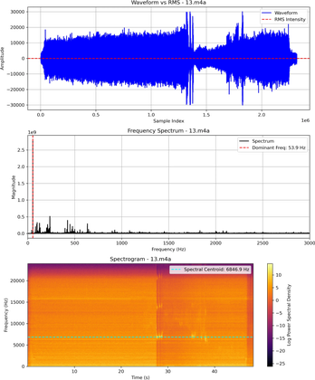
Journal of the Brazilian Society of Mechanical Sciences and Engineering, 47(12), 629, 2025
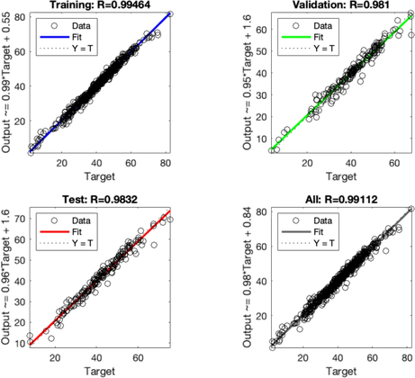
Neural Computing and Applications, 37(20), 15041-15078, 2025
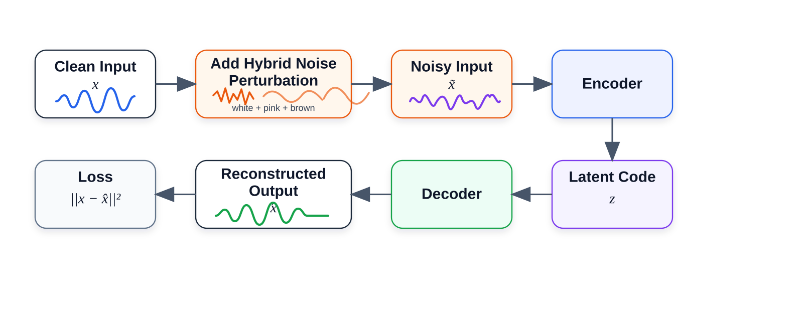
IEEE ISM, 2025, pp. 354-357
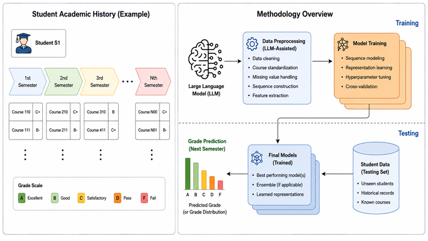
IEEE AIxSE, 2025, pp. 9-13
World Scientific, 468 pages, 2025
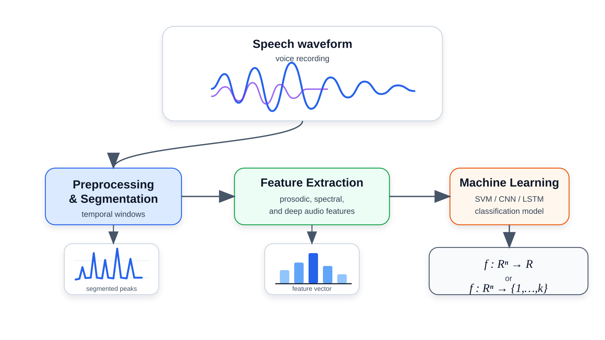
European Psychiatry, Cambridge University Press, 67(S1), S57-S58, 2024
Representative Work
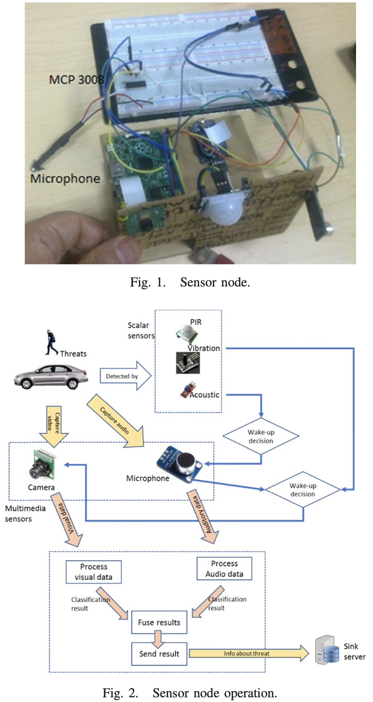
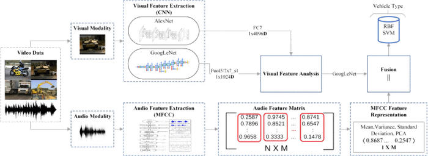
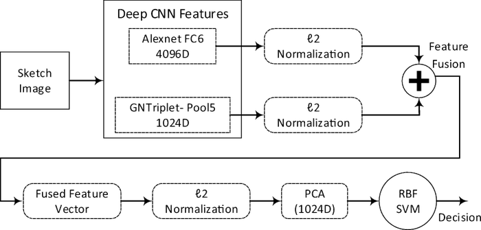
Multimedia Tools and Applications, 2019
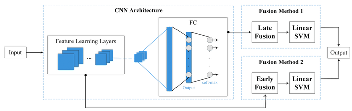
International Journal of Semantic Computing, 2016
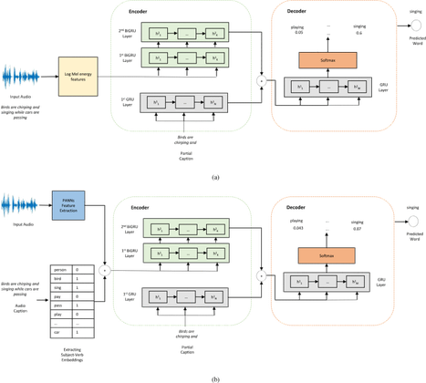
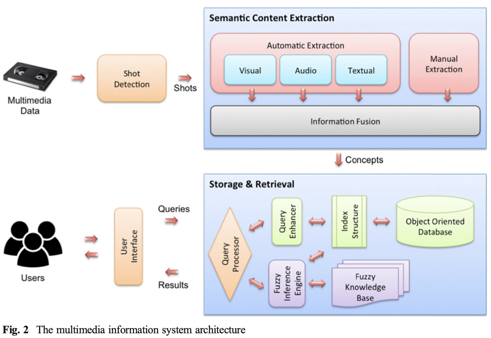
Multimedia Tools and Applications, 2018
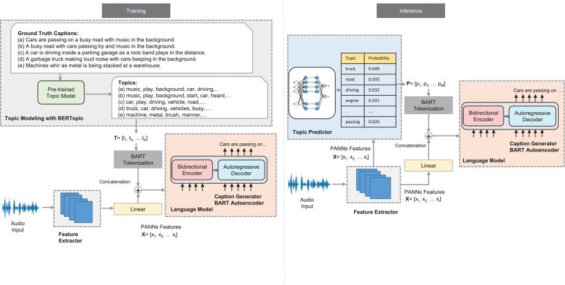
IEEE Access, 2023
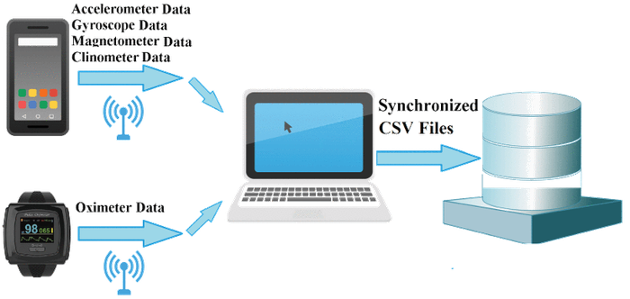
Full List
For the complete and up-to-date publication list, please refer to: Google Scholar, DBLP, and ORCID.